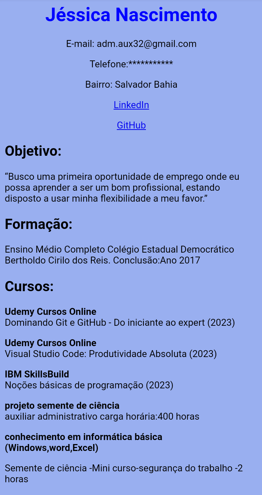

Sobre mim
Olá me chamo Jéssica Nascimento,tenho 25 anos,sou Residente de Salvador Bahia,estou desenvolvendo, conhecimento e aprendizado na Dominação do Git e GitHub-Do iniciante ao expert,entre elas estão,Visual Studio Code: Produtividade Absoluta,IBM SkillsBuild e colocando em prática,Noções básicas de programação.
Formação
Ensino Médio Completo,no Colégio Bertholdo Cirilo dos Reis Concluído 2017,Salvador Bahia.
Cursos
Udemy Cursos Online Dominando Git e GitHub - Do iniciante ao expert (2023) Udemy Cursos Online Visual Studio Code: Produtividade Absoluta(2023) IBM SkillsBuild Noções básicas de programação (2023) Curso: Computação gráfica Carga horária:10 horas Concluído :24/08. Oficina Saga Projeto Semente de Ciência Curso: Auxiliar Administrativo Carga Horária: 400 horas Período: novembro de 2016 à abril de 2017 Conhecimento em informática básica (Windows,word,Excel) Semente de Ciência -Mini curso- Segurança do Trabalho -2 horas Curso de Garçom (360h)-Março/2018 a Junho-SenacProjetos
 Currículo Saiba Maisada Lovelace Programadora
Saiba MaisAugusta Ada Byron King, conhecida como Ada Lovelace, criou o primeiro algoritmo capaz de ser processado por uma máquina quando previu que os computadores fariam mais do que simples cálculos matemáticos. Na época não tinha recursos necessários para fazer testes sobre seus estudos, e com isso, seu trabalho só foi validado após sua morte, que ocorreu em 1852, aos 36 anos de idade.
Cardápio barraca da jel
.jpeg) Saiba Mais
Saiba Mais
Projeto ods vida na agua
Saiba mais